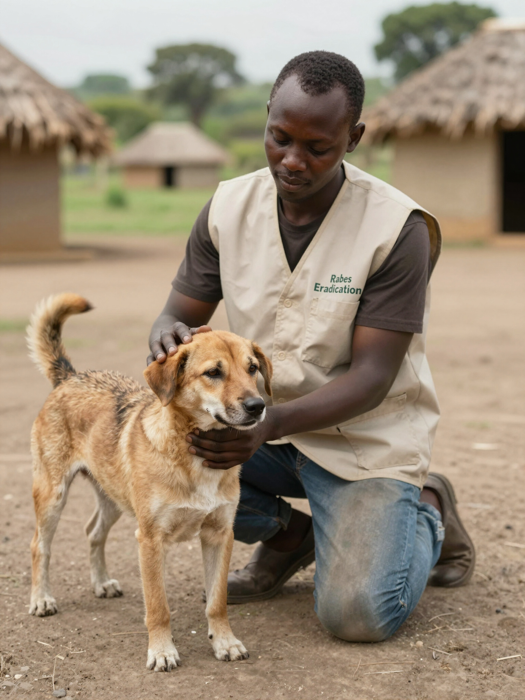
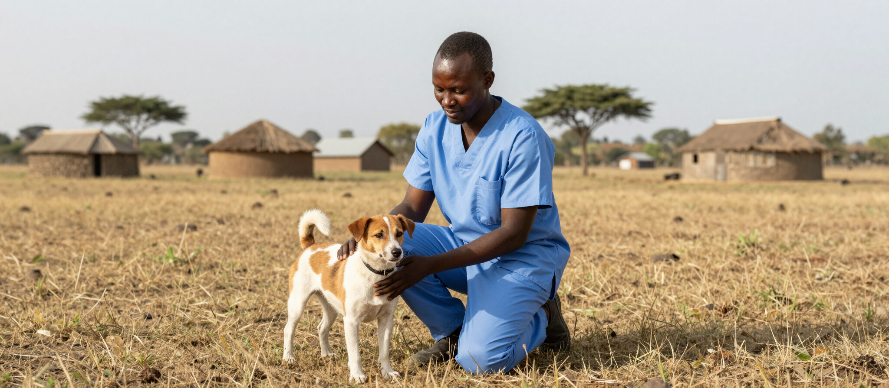
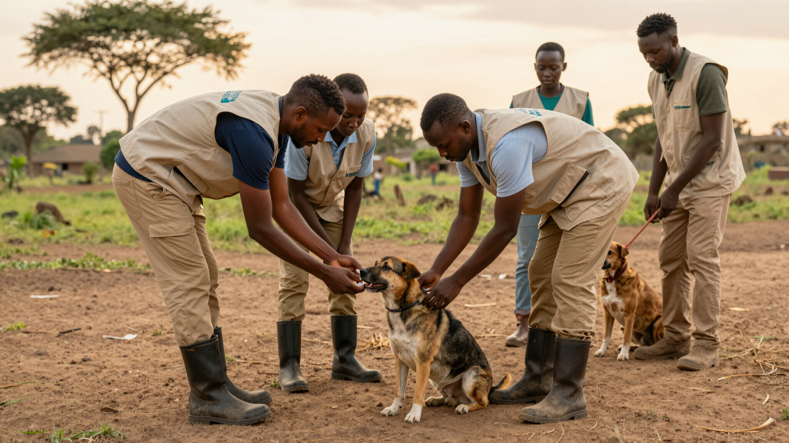

Who We Are
ToCAWI (Tails of Care Animal Welfare Initiative) is a compassionate, science-driven animal welfare organisation working towards a rabies-free Kenya. Through strategic mass vaccination, humane animal population management, collaborative partnerships, and community-led education, we protect animals, safeguard public health, and strengthen communities.

Our Mission
To advance animal welfare and protect public health through evidence-based programmes, education, advocacy, strategic partnerships, and compassionate veterinary initiatives that improve the lives of animals and the communities they serve.
Our Vision
A future where every animal lives free from cruelty, preventable suffering, and neglect, and where compassionate, empowered communities promote animal welfare through knowledge, action, and accessible veterinary care.
Responding to the Rabies Crisis in Kenya

For decades, rabies has remained a persistent public health and animal welfare challenge in Kenya. Limited access to veterinary services, insufficient vaccination coverage, and unmanaged free-roaming animal populations have allowed the disease to persist, placing both people and animals at risk. In many communities, fear and misinformation have led to inhumane methods of animal population control that fail to address the root causes of rabies while causing unnecessary suffering.
ToCAWI was founded to break this cycle through an evidence-based, three-pronged approach. By combining strategic mass dog vaccination to interrupt rabies transmission, humane animal population management through sterilization, and community-led education, we build safer communities for both people and animals. Our story is one of transforming fear into compassion and replacing preventable suffering with sustainable solutions that strengthen animal welfare across Kenya.
ToCAWI
ToCAWI is powered by a compassionate, volunteer-driven network of dedicated professionals committed to advancing animal welfare in Kenya. Our team brings together veterinarians, animal welfare advocates, community leaders, educators, and local partners to address the rabies challenge through scientific expertise, community engagement, and evidence-based action. Together, we are building healthier, safer communities for both people and animals.

Working in close collaboration with local veterinarians, village elders, and community health stakeholders.
Our Core Values
Compassion
We place the welfare and dignity of animals at the very heart of every community-led initiative we undertake in Kenya.
Integrity
We act with unwavering ethics and honesty in all our veterinary procedures and educational engagements.
Accountability
We are responsible stewards of our donors' trust and maintain transparency with our local community partners.
Transparency
We openly share our rabies data and management practices to build and sustain trust within the communities we serve.
Inclusion
We ensure that Kenyan community members from all backgrounds are heard and active participants in our programs.
Innovation
We utilize science-driven methods and creative education to break the cycle of rabies for healthier communities.